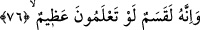
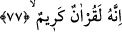

Allah Teâlâ’nın kudretinin büyüklüğüne ve hikmetinin kemâline başka hiç bir beyânın
ifâde edemeyeceği derecede kuvvetli deliller vardır.
Bazı âlimlere göre, âyet-i kerîmede geçen “yıldızlar”dan maksad, Kur’ân’ın
bölümleri, âyet ve sûreleri; “yerleri”nden maksad da indikleri zamanlardır. İbn Abbas
(r.a.) da bu görüştedir.
Ayrıca “yıldızlar”dan ashab-ı kiram ve onlardan sonra hidâyet üzerinde olan âlimler;
“yerleri”nden de onların kabirleri kasdedildiği söylenmiştir.
76. Bilirseniz, gerçekten bu, büyük bir yemindir.
“Bilirseniz, gerçekten bu,” yukarıda zikredilen yemin “büyük bir yemindir.” Çünkü,
yemin edilen şeylerde Allah’ın kudretinin büyüklüğüne, hikmetinin mükemmelliğine,
rahmetinin de sonsuzluğuna deliller vardır. Rahmetinin gereklerinden biri de onları
başıboş bırakmayıp kitap indirmiş olmasıdır. Âyetteki “bilirseniz” anlamındaki “lev
ta’lemûne” cümlesi, üzerine yemin edilen varlığın önemini ve büyüklüğünü
kuvvetlendirip pekiştirmek için sıfatla mevsuf arasında parantez cümlesidir. Bu cümle
ile aynı zamanda onların bu hususta bilgilerinin olmadığı vurgulanmaktadır. Yeminin
cevabı terk edilmiş veya kolaylıkla anlaşılacağından emin olunduğu için hazf edilmiştir.
Yâni “bilirseniz onu büyük görür veya gereği ile amel edersiniz” demektir. Dolayısıyla
âyette muhatapların kusurları ve yemin niteliğinin büyüklüğü vurgulanmaktadır. Bu
cümle de yine kasem ile onun cevabı olan gelecek âyet-i kerîme arasında bir parantez
cümlesidir.
77. Şüphesiz bu, değerli bir Kur’an’dır.
Bu cümle, yeminin cevabıdır. Âyet-i kerîmede geçen kerim kelimesi, Kur’ân’ın sıfatı
olup “faydası pek çok olan kitap” demektir. Çünkü bu Kur’ân, insanların dünya
hayatlarının düzenli, âhiret hayatlarının mutluluk içinde olması için mühim ilimlerin
metodlarını ve ana ilkelerini kapsamaktadır. Bu halde kerem kelimesi, başkalarına
ikram ve cömertliği olan akıl sâhiplerinden birinin yerine istiâre olarak kullanılır. Ya da
“kitap güzeldir, kitaplar içinde kendisinden memnun olunan bir kitaptır veya Allah
nezdinde çok değerli bir kitaptır” gibi bir mânâ ifâde eder.
Bazı müfessirlere göre Kur’an güzel ahlâkı, yüce işleri ve şerefli davranışları
gösterip öğrettiği için kerim, yâni çok şerefli bir kitap sıfatıyla nitelenmiştir.
Diğer bazı tefsircilere göre, bu kitap kerim ve çok şereflidir, çünkü, yaratılmışların en